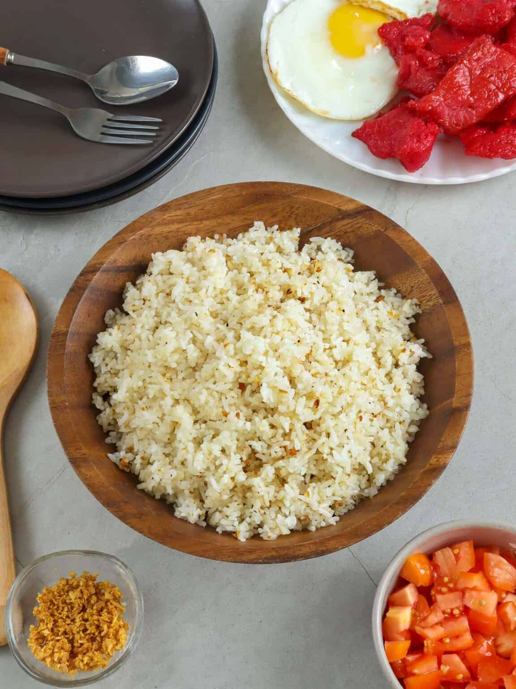

Home
Sinangag

Finished sinangag recipe
Ingredients
- 4 cups cold, cooked white rice
- ¼ cup canola oil
- Lots of garlic, peeled and minced
- salt and pepper to taste
Steps
- In a bowl, break cold rice to separate grains.
- In a wide skillet over low heat, heat about ¼ cup oil. Add garlic and cook, stirring occasionally until golden brown. With a slotted spoon, remove the garlic and drain on paper towels.
- Remove excess oil except for about 1 to 2 tablespoons. Raise heat to high, swirling the oil to coat the surface of the pan.
- Add rice and cook, spreading on the surface of the pan for about 45 seconds or until grains start to sizzle and then toss to redistribute. Repeat a few times until rice is heated through.
- Return ¾ of the garlic and toss with the fried rice until evenly distributed.
- Season with salt and pepper to taste.
- To serve, transfer to a serving platter and top with the remaining garlic bits.